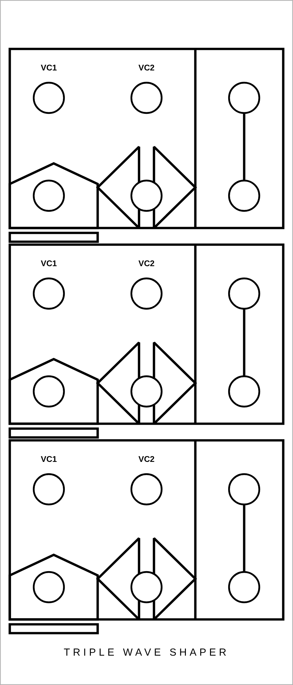

Triple Wave Shaper
TWS · CGS85
Three non-linear waveshapers that turn a sawtooth into a sine and, chained, fold waves into richer shapes.
- Design
- Serge Tcherepnin; CGS85 by Ken Stone
- Function
- Timbre / waveshaping
- Panel widths
- 2"
- Build options
- 3
Panels in this repo


How it works
Each section bends the input waveform through a non-linear curve. With the right level a sawtooth or triangle comes out close to a sine wave; driven harder, the peaks fold back.
The three sections are independent, but patched in series each one adds another fold, building up brighter and more complex timbres. They work on oscillators and on external signals from a preamp.
Controls and jacks
| Name | Type | What it does |
|---|---|---|
| Inputs and outputs (three sections) | inputs / outputs | One waveshaper each. |
| Level knobs | knobs | Drive into each shaper. |
| VC inputs | inputs | Voltage control of the drive (see panel). |
Build options
Prism Circuits Triple Waveshaper
- Offered as
- PCB for a 4U paperface panel (also an LW-format version)
- Format
- 4U Serge, paperface
- Schematic
- not publishedNot published by Prism
- BOM
- availableMouser project BOM, linked from the product page
LW-format version: https://prismcircuits.net/products/triple-waveshaper-lw
Prism's product page also links its own panel art; that artwork is Prism's and is not copied here.
Ken Stone CGS85 Triple Wave Shaper
- Offered as
- PCB from Elby Designs; schematic, parts list and construction notes on Ken Stone's page
- PCB
- Elby Designs: CGS85 PCB
- Schematic
- availableCGS85 Triple Wave Shaper schematic
- BOM
- availableCGS85 Triple Wave Shaper parts list (in the BOM spreadsheet below)
Low-Gain LGE085 Triple Waveshaper
- Offered as
- Assembled module, white panel, or DIY PCBs (main + I/O board)
- Format
- 4U Serge, Loudest Warning-style mounting
- Schematic
- availableLGE085 main and I/O schematics, layouts with designators and values (Google Drive, linked from the product page)
- BOM
- availableLGE085 BOM (main + I/O); Mouser upload file in the BOM section below
- LGE085 main board: The three LM3900 wave-shaping stages, with a trimmer per stage.
- LGE085C I/O board: Jacks, the four pots and the three switches: feedback (SPDT on-off-on) and two JOIN switches that chain stage 1 into 2 and 2 into 3.
The LGE085 adds JOIN switches and a feedback switch that the original TWS does not have, so its I/O board will not line up with the paperface or modern TWS panels in this repo without changes.
The 470nF film caps have 7mm pads; the 5mm WIMA parts in the Mouser file fit with the leads bent.
Ken Stone's Serge-derived designs may be built for personal use only; Serge Tcherepnin keeps all rights to his circuits. Schematics, parts lists and PCBs belong to their designers and sellers, so these pages link to them rather than copying them.
Bill of materials
Spreadsheet: triple-wave-shaper.csv (CSV; opens in Excel, Numbers or Google Sheets). The Mouser columns are there to fill in with order links.
Order from Mouser: triple-wave-shaper__cgs85_tws.csv (15 lines, about $22.05 at single-unit prices), triple-wave-shaper__lge085.csv (21 lines, about $58.31 at single-unit prices). Upload it at Mouser's BOM tool (it reads the Mouser and manufacturer part number columns). Parts Mouser doesn't stock are listed in triple-wave-shaper__cgs85_tws_not_at_mouser.csv, triple-wave-shaper__lge085_not_at_mouser.csv.
All builds (3 lines)
| Section | Type | Value / part | Qty | Notes |
|---|---|---|---|---|
| Front panel (Paperface (1973)) | Panel hardware | Banana jack, colour not recorded | 15 | 4 mm |
| Front panel (Paperface (1973)) | Panel hardware | Potentiometer + knob | 3 | value from the board BOM |
| Front panel (Paperface (1973)) | Panel hardware | Knob | 3 | one per pot |
Prism Circuits Triple Waveshaper (1 lines)
| Section | Type | Value / part | Qty | Notes |
|---|---|---|---|---|
| Board | See the maker's BOM | Mouser project BOM, linked from the product page - https://prismcircuits.net/products/serge-modular-triple-wave-shaper |
Ken Stone CGS85 Triple Wave Shaper (16 lines)
| Section | Type | Value / part | Qty | Notes |
|---|---|---|---|---|
| CGS85 board | Capacitor | 100pF decoupling caps | 3 | from https://open4umodular.github.io/synthpanel/modules/cgs85_tws.html |
| CGS85 board | Capacitor | 100n (0.1) decoupling caps | 1 | from https://open4umodular.github.io/synthpanel/modules/cgs85_tws.html |
| CGS85 board | Capacitor | 470n MKT or sim | 3 | from https://open4umodular.github.io/synthpanel/modules/cgs85_tws.html |
| CGS85 board | Capacitor | 10uF 25V | 1 | from https://open4umodular.github.io/synthpanel/modules/cgs85_tws.html |
| CGS85 board | Capacitor | 47uF 25V | 3 | from https://open4umodular.github.io/synthpanel/modules/cgs85_tws.html |
| CGS85 board | Resistor | 330R | 3 | from https://open4umodular.github.io/synthpanel/modules/cgs85_tws.html |
| CGS85 board | Resistor | 100k | 6 | from https://open4umodular.github.io/synthpanel/modules/cgs85_tws.html |
| CGS85 board | Resistor | 150k | 3 | from https://open4umodular.github.io/synthpanel/modules/cgs85_tws.html |
| CGS85 board | Resistor | 220k | 6 | from https://open4umodular.github.io/synthpanel/modules/cgs85_tws.html |
| CGS85 board | Resistor | 1M5 | 9 | from https://open4umodular.github.io/synthpanel/modules/cgs85_tws.html |
| CGS85 board | Potentiometer / trimmer | 22k trimmer | 3 | from https://open4umodular.github.io/synthpanel/modules/cgs85_tws.html |
| CGS85 board | Potentiometer / trimmer | 100k Lin pot | 3 | from https://open4umodular.github.io/synthpanel/modules/cgs85_tws.html |
| CGS85 board | Semiconductor | 1N4148 | 12 | from https://open4umodular.github.io/synthpanel/modules/cgs85_tws.html |
| CGS85 board | Semiconductor | LM3900 | 1 | from https://open4umodular.github.io/synthpanel/modules/cgs85_tws.html |
| CGS85 board | Misc | Ferrite Bead | 1 | from https://open4umodular.github.io/synthpanel/modules/cgs85_tws.html |
| CGS85 board | Misc | CGS85 VER1.0 PCB | 1 | from https://open4umodular.github.io/synthpanel/modules/cgs85_tws.html |
Low-Gain LGE085 Triple Waveshaper (25 lines)
| Section | Type | Value / part | Qty | Notes |
|---|---|---|---|---|
| Low-Gain LGE085 main board + LGE085C I/O board | Ceramic 100pF C0G 50V, 5mm | 3 | C1,C4,C7 | |
| Low-Gain LGE085 main board + LGE085C I/O board | Electrolytic 47uF 25V | 3 | C2,C5,C8 | |
| Low-Gain LGE085 main board + LGE085C I/O board | Film 470nF 63V (5mm pitch; the board has 7mm pads, so bend the leads) | 3 | C3,C6,C9 | |
| Low-Gain LGE085 main board + LGE085C I/O board | Electrolytic 10uF 25V | 1 | C10 | |
| Low-Gain LGE085 main board + LGE085C I/O board | Ceramic 100nF X7R 50V, 0805 SMD | 2 | C11,C12 | |
| Low-Gain LGE085 main board + LGE085C I/O board | Small-signal diode | 12 | D1-D12 | |
| Low-Gain LGE085 main board + LGE085C I/O board | Resistor 10R (or a 60 ohm ferrite bead) | 1 | FB1 | |
| Low-Gain LGE085 main board + LGE085C I/O board | MTA-156 power header, 4 pin | 1 | J1 | |
| Low-Gain LGE085 main board + LGE085C I/O board | Resistor 100k 1/4W 1% | 6 | R1,R9,R11,R19,R21,R29 | |
| Low-Gain LGE085 main board + LGE085C I/O board | Resistor 1M5 1/4W 1% | 9 | R2,R3,R10,R12,R13,R20,R22,R23,R30 | |
| Low-Gain LGE085 main board + LGE085C I/O board | Trimmer 25k, 3362P | 3 | R4,R14,R24 | |
| Low-Gain LGE085 main board + LGE085C I/O board | Resistor 330R 1/4W 1% | 3 | R5,R15,R25 | |
| Low-Gain LGE085 main board + LGE085C I/O board | Resistor 150k 1/4W 1% | 3 | R6,R16,R26 | |
| Low-Gain LGE085 main board + LGE085C I/O board | Resistor 220k 1/4W 1% | 6 | R7,R8,R17,R18,R27,R28 | |
| Low-Gain LGE085 main board + LGE085C I/O board | Quad Norton amplifier | 1 | U1 | |
| Low-Gain LGE085 main board + LGE085C I/O board | 9mm pot B100K | 4 | I/O VR1-VR4 | |
| Low-Gain LGE085 main board + LGE085C I/O board | Mini toggle SPDT on-off-on (feedback) | 1 | I/O K1 | |
| Low-Gain LGE085 main board + LGE085C I/O board | Mini toggle SPDT on-on (join 1-2, 2-3) | 2 | I/O K2,K3 | |
| Low-Gain LGE085 main board + LGE085C I/O board | Banana jack, black | 6 | INPUT x3, OUT x3 | |
| Low-Gain LGE085 main board + LGE085C I/O board | Banana jack, blue | 6 | VC1 x3, VC2 x3 | |
| Low-Gain LGE085 main board + LGE085C I/O board | Standoff M3 x 11mm | 4 | Board mounting | |
| Low-Gain LGE085 main board + LGE085C I/O board | Not at Mouser | Knobs (Davies 1900H style) | 4 | Synthcube, Thonk, Modular Addict |
| Low-Gain LGE085 main board + LGE085C I/O board | Not at Mouser | M3x6 button-head screws, M3 split washers | 8 | Hardware |
| Low-Gain LGE085 main board + LGE085C I/O board | Not at Mouser | 2.54mm male + female 40-pin headers | 1 | Board-to-board connection |
| Low-Gain LGE085 main board + LGE085C I/O board | Not at Mouser | LGE085 + LGE085C PCBs | 1 | Low-Gain Electronics |
Panel hardware
Front-panel parts for each panel in this repo, counted from the panel files. Board parts (resistors, ICs, trimmers) are in each build option's own BOM.
Paperface (1973)
| Part | Qty | Note |
|---|---|---|
| Banana jack, colour not recorded | 15 | 4 mm |
| Potentiometer + knob | 3 | value from the board BOM |
STS / modern
| Part | Qty | Note |
|---|---|---|
| Banana jack, black | 3 | 4 mm |
| Banana jack, blue | 9 | 4 mm |
| Mounting screw | 4 | panel to rails |
| Potentiometer + knob | 3 | value from the board BOM |
| Toggle switch | 1 | type from the board BOM |